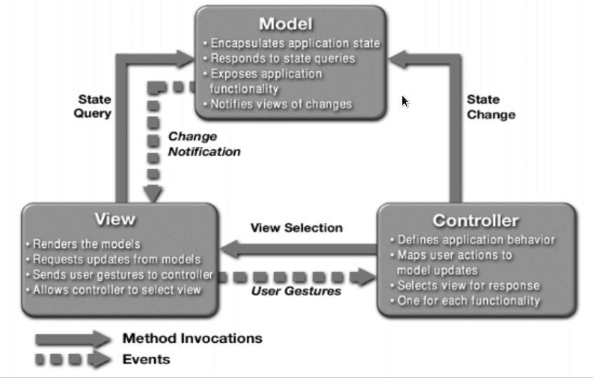
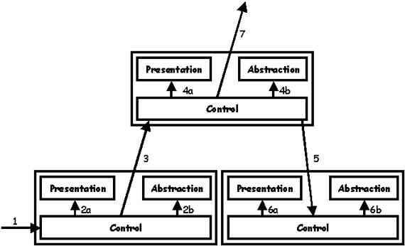
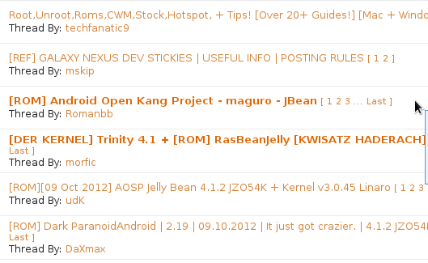
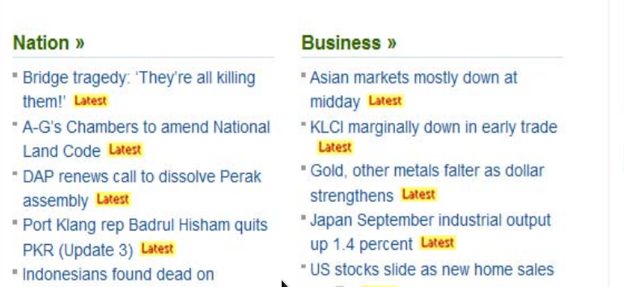
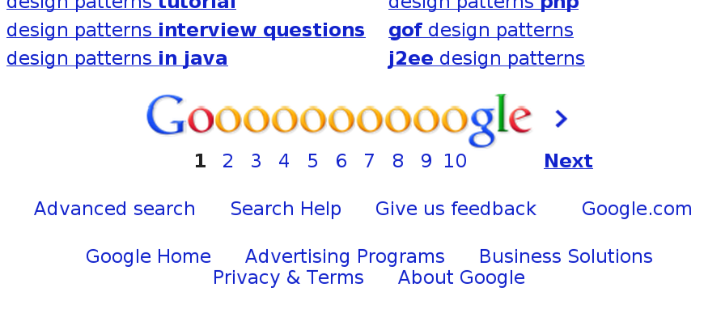
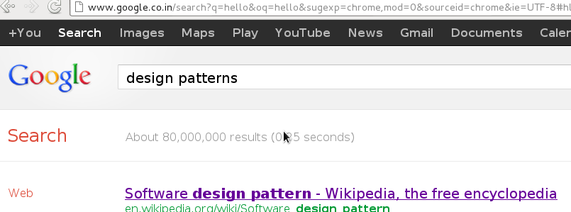

A web application is an application that is accessed by users over a network such as the internet or an intranet
Web applications are popular due to the ubiquity of web browsers, and the convenience of using a web browser as a client
Design patterns
A design pattern in architecture and computer science is a formal way of documenting a solution to a design problem in a particular field of expertise
design patterns
Design patterns refer to reusable or repeatable solutions that aim to solve similar design problems during development process
Each pattern provides the main solution for particular problem
Design patterns
Normally, developers use either their own desired styles or organization’s framework to develop their applications.
This practice is time consuming and difficult for future maintenance.
Why?
For a developer, design patterns produces more maintainable design.
For a user, patterns will enhance the usability of web applications.
focus
Architectural patterns
Interaction patterns
architectural patterns
The architectural patterns address various issues in software engineering, such as computer hardware performance limitations,high availability and minimization of a business risk
Some architectural patterns have been implemented within software frameworks.
focus
Model-View-Controller (MVC)
Presentation-Abstraction-Control (PAC)
MVC Architecture
Three components
Model
View
Controller
Model
Model summarizes the core application data and functionality
view
View displays information to clients on the screen
controller
Controller handles the interaction between user interface and user inputs, and initiates the creation of the application’s new view
architecture

Why?
Maintainability
Scalability
Why not?
Experience
Time consumption
Inappropriate for small and medium-size web applications
In action
Java EE
Code Igniter PHP Framework
PAC Architecture
Three components
Presentation
Abstraction
Control
Presentation
Presentation component formats the visual and audio presentation of data
Abstraction
Abstraction component retrieves and processes the data
Control
Control component handles things such as the flow of control and communication between the other two components
Difference?
In contrast to MVC, PAC is used as a hierarchical structure of agents.
Each agent consists of a triad of presentation, abstraction and control parts
The agents communicate with each other only through the control part of each triad
architecture

Why?
Within each triad, it completely insulates Presentation and Abstraction.
It is possible to multithread the Presentation and Abstraction which can give the user experience of very short program start time
Why not?
Efficiency
Communication between PAC agents causes overhead
In action
Drupal
Interaction patterns
Interaction design patterns are a way to describe solutions to common usability or accessibility problems in a specific context
Focus
Observer
Strategy
News
Pagination
Set-based Navigation
Observer
The observer pattern is a software design pattern in which an object, called the subject, maintains a list of its dependents, called observers, and notifies them automatically of any state changes, usually by calling one of their methods
In web
Used to decouple the navigation process from the perceivable record of the process
Useful to record the visited node and link in a navigation history
Useful when we want to get the history record of the navigated path in easier way
In action

In action
Strategy
Software design pattern, whereby algorithms can be selected at runtime
Strategy pattern defines a family of algorithms, encapsulates each one, and makes them interchangeable
In web
Strategy lets the algorithm vary independently from clients that use it
Class that performs validation on incoming data may use a strategy pattern to select a validation algorithm based on the type of data, the source of the data, user choice, and/or other discriminating factors
News
News design pattern allows the access of new information and ease the growth of website
Enables users to be informed with the new released information or latest changes and updates on the website
In action

why?
Web usability will be affected when website grows bigger
This pattern can be used when there are issues of how user will be notified about the recent changes of information while maintenance of website needs to be considered
Pagination
Organize the search results in a simpler and more organized way
Enables users to navigate results using controls such as page number or next, previous, first, and last
In Action

Why?
Ease of reading
Suitable when the search results is organised into categories of interest, such as newest first
In term of search efficiency, this pattern is more efficient as it only displays a few results in a page rather than showing all results in one page
Set-based Navigation
Organises the information in sets of related information items
Users can navigate a set a collection in different ways according to the task or scope provided
In Action

Why?
Categorize the scopes of data viewing to readers
Search for the relevant information or highlighted events from the sites easily
Improves the efficiency of browsing information
Summary
MVC
Suitable in large interactive system that the contents and interfaces are dynamic
Provides flexibility in handling requests and functionalities
Developers must be experienced as it is difficult to implement
PAC
Suitable to create an entirely new GUI framework for interactive systems that performs multi-tasking
Consists of separate agents that allow the development of data model and user interface to work independently
Loss in efficiency because the communication between PAC agents may cause overhead
Observer pattern
Helps users to get history record of the navigated path with backtrack process
Supports backtracking of navigated history record which is user friendly
Overhead might occur
Strategy pattern
Useful when there is a need to establish a relation between two or more objects at different times
Reduces memory wastage
Improves memory requirement and save time
News
Rapid changes or updates that need to notify users about the latest information of the website
Enables user to take note with the latest changes of the website easily
Provides visual feedback to users in faster and immediate way for rapid changing website
Pagination
Large list of items that is too large to be shown in one page
Organises large list of items into smaller bits that enable users to browser in a more convenient way
Many types are available as they depend on the presentation of websites
Set-based Navigation
Groups data in a meaningful set and provides intra-set navigation facilities
Improves user’s navigation to get more relevant information.
References
Improving a Web Application Using Design Patterns - Phek Lan Thung